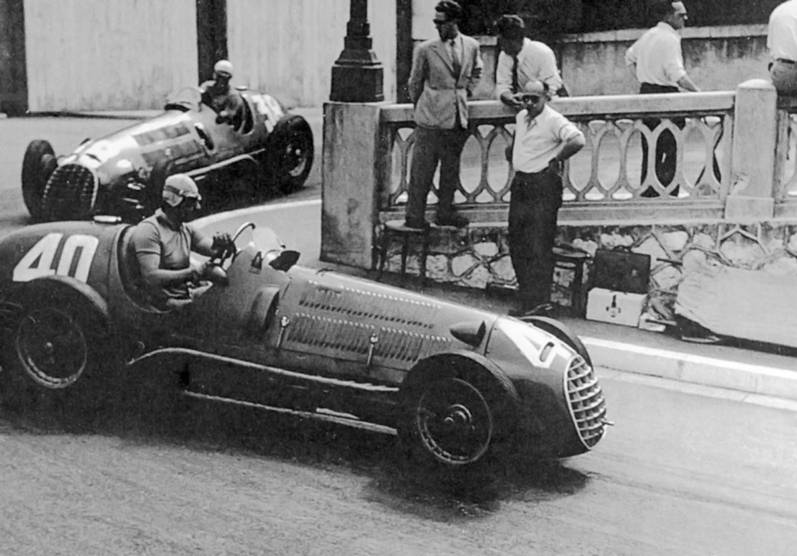

The Ferrari 125 F1 was a bold first step into Formula 1 but struggled against competitors like Alfa Romeo. Despite its short-lived success, it laid the foundation for Ferrari’s dominance in the sport and introduced the V12 engine philosophy that became a hallmark of Ferrari’s racing heritage.

Technical Specifications
Engine: 1.5 L supercharged V12
Power: 230–280 hp @ 7000–7500 rpm
Torque: 312 Nm
Transmission: 5-speed manual
Top Speed: 260 km/h
Weight: 710 kg
The Ferrari 125 F1 debuted in 1948 with a V12 engine developed by Gioacchino Colombo. It marked Ferrari’s entry into Formula One, setting the foundation for decades of dominance.